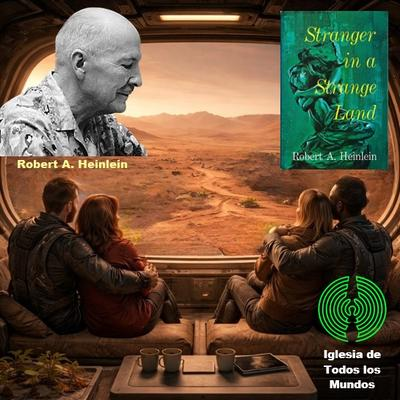

Por extraño que parezca, la historia humana demuestra que las religiones no siempre nacen de antiguas revelaciones divinas envueltas en brumas milenarias. A veces nacen de algo mucho más prosaico: la imaginación de un escritor. Y no cualquier escritor místico en una cueva del desierto, sino un autor de ciencia ficción sentado frente a su máquina de escribir.


Este es el interesante caso —bastante irónico—de la Church of All Worlds (Iglesia de Todos los Mundos), una organización neopagana surgida directamente de una novela de ciencia ficción publicada en 1961. Sí: una novela. Una religión nacida de una obra de ciencia ficción. El origen de esta curiosa iglesia se encuentra en la novela Stranger in a Strange Land (Forastero en tierra extraña), escrita por Robert A. Heinlein (1907-1988), un ingeniero y oficial naval estadounidense, y autor de ciencia ficción.
La historia relata la vida de un humano criado por marcianos que llega a la Tierra e introduce una nueva filosofía espiritual. Aunque esta religión ficticia es rechazada por la sociedad dentro de la novela, lo que probablemente Heinlein nunca imaginó es que algunos lectores decidirían no quedarse en el plano literario: en 1962, apenas un año después de la publicación del libro, dos estudiantes del Westminster College, Oberon Zell-Ravenheart (entonces llamado Tim Zell) y Lance Christie, fundaron un grupo inspirado directamente en los conceptos de la novela, dando origen así a la Iglesia de Todos los Mundos.
Pero la ironía histórica alcanzó su punto máximo en 1968, cuando el gobierno de los Estados Unidos reconoció oficialmente al grupo, considerándola una iglesia exenta de impuestos. Es decir, una religión basada en una novela de ciencia ficción, recibió estatus religioso oficial. Si esto no demuestra la extraordinaria creatividad humana para construir «sistemas espirituales», pocas cosas lo harán.
Pero resulta que la Iglesia de Todos los Mundos adoptó también la terminología inventada por Heinlein en su novela, un supuesto «lenguaje marciano» que fue convertido en doctrina. T entre sus conceptos centrales destacan:
«Tú eres Dios» (Thou Art God). Una frase que afirma que cada ser humano posee una chispa divina interior. Curiosamente, esta afirmación elimina la necesidad de un dios externo… aunque no la necesidad de una iglesia.
«Grok». En la novela esta es una palabra marciana que significa comprender algo tan profundamente, que el observador y lo observado se vuelven uno. Y en la iglesia se convirtió en un concepto espiritual central. Hoy algunos miembros hablan de «grokkear» experiencias o personas, como si un verbo extraterrestre fuese una categoría teológica.[*]
Nidos (Nests). Ellos llaman así a sus comunidades locales, copiando el término usado en la ficción para describir agrupaciones marcianas.
Testigos Veraces (Fair Witness). Personas entrenadas para observar sin interpretar. Una idea interesante… aunque paradójica dentro de cualquier sistema religioso.
Además, esta iglesia tiene un ritual central que también proviene directamente de la novela: compartir agua. En la práctica, dos personas beben del mismo recipiente, y se convierten así en «Hermanos de Agua». Según la tradición, este vínculo genera una obligación absoluta de ayuda mutua, y crea redes de parentesco espiritual llamadas Waterkin.
Desde una perspectiva antropológica el ritual es muy interesante, porque reproduce un patrón universal: la creación simbólica de parentesco. Las religiones, desde las tribus amazónicas hasta las grandes iglesias institucionales, suelen inventar mecanismos para transformar extraños en «familia espiritual». La diferencia aquí es que el símbolo no proviene de mitos ancestrales, sino de una novela de ciencia ficción escrita en pleno siglo XX.
Pero además esta religión cuenta con su revista oficial, llamada Green Egg (Huevo Verde), que fue fundada en 1968. Durante décadas funcionó como un foro donde wiccanos, druidas, neopaganos y entusiastas de la ciencia ficción intercambiaban «ideas espirituales». El título parece salido de un desayuno surrealista, pero tuvo una influencia considerable dentro del neopaganismo moderno.
A través de esta revista también se popularizó la Hipótesis Gaia, la idea de que la Tierra funciona como un organismo vivo. Una hipótesis científica interesante, convertida aquí en ecoteología espiritual.
La «Iglesia de Todos los Mundos» estuvo en su apogeo durante los años noventa, cuando llegó a tener una red activa de comunidades, y su revista miles de suscriptores. Hoy sin embargo, la organización cuenta con alrededor de un centenar de miembros activos, aunque mantiene simpatizantes y grupos dispersos. Su sede se encuentra en Toledo, Ohio, pero existen comunidades en otras ciudades de Estados Unidos y Australia. Es decir, la religión literaria sigue viva.
Sin duda este es un caso que revela varios aspectos sobre la naturaleza de las religiones. Desde el punto de vista antropológico, se trata de un hecho extraordinario que confirma algo que muchos historiadores de las religiones saben desde hace tiempo: las religiones son constructos culturales. Los elementos que aquí vemos—mitos fundacionales, rituales, lenguaje sagrado, parentesco espiritual, publicaciones doctrinales— son exactamente los mismos mecanismos presentes en religiones mucho más antiguas. La única diferencia es que en este caso podemos ver claramente el momento de su nacimiento.
No hay milenios de tradición ocultando su origen, ni hay revelaciones en montañas o mensajes de ángeles. Hay simplemente un escritor imaginando una historia… y algunos lectores decidiendo convertir esa ficción en «espiritualidad».
Al final la Iglesia de Todos los Mundos puede parecer una curiosidad excéntrica, casi humorística, pero su existencia plantea una pregunta embarazosa: Si una religión puede surgir de una novela de ciencia ficción del siglo XX, ¿cuántas religiones del pasado habrán nacido de relatos que, en su momento, también fueron simplemente historias poderosas contadas por alguien?
La diferencia entre mito, literatura y religión, después de todo, suele depender menos de la verdad de la historia… y mucho más de cuántas personas deciden creerla.
[Godless Freeman]
https://religiondatabase.org/browse/949
https://www.amazon.com/Sharing-Water-Church-Worlds-handbook/dp/B0DKB28P8X
https://es.wikipedia.org/wiki/Robert_A._Heinlein
https://es.wikipedia.org/wiki/Forastero_en_tierra_extra%C3%B1a
Comentarios
Comments powered by Disqus